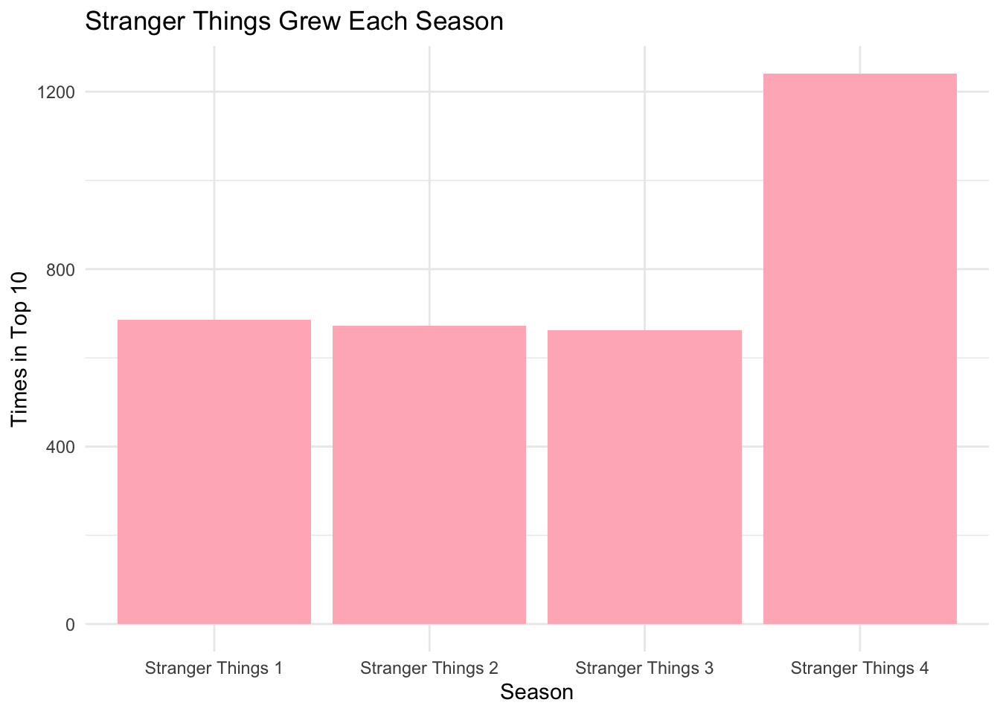
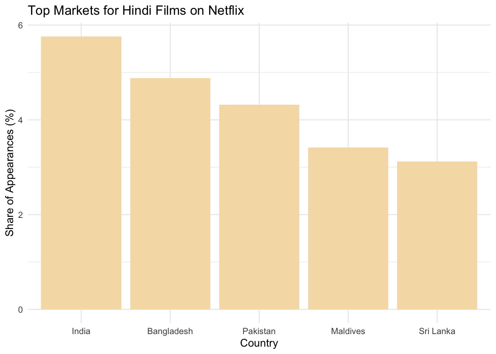

MP1: Exploring the Most Popular Programming on Netflix
Author
Shreya Karki
Published
September 30, 2025
1 Introduction
Netflix is one of the largest global streaming platforms, reaching audiences across many countries and languages.
This project explores Netflix’s Top 10 data (global and per-country) to answer key questions:
In how many countries does Netflix operate and how does content performance vary regionally?
Which films and shows demonstrate sustained audience engagement versus short-term popularity?
How does local-language content perform globally, and what does this reveal about evolving viewer preferences?
The results are not just technical outputs, they reveal how Netflix identifies hit shows, supports local-language films, and builds worldwide franchises.
By systematically analyzing this data, three data-driven press releases are written that highlight success of films.
2 Data Acquisition
The official Netflix Top 10 weekly datasets were retrieved directly from Netflix Tudum.
Code
# Create data/mp01 folder if it does not exist yetif(!dir.exists(file.path("data", "mp01"))){dir.create(file.path("data", "mp01"), showWarnings=FALSE, recursive=TRUE)}# Define filename for global and country datasetGLOBAL_TOP_10_FILENAME <-file.path("data", "mp01", "global_top10_alltime.csv")if(!file.exists(GLOBAL_TOP_10_FILENAME)){download.file("https://www.netflix.com/tudum/top10/data/all-weeks-global.tsv", destfile=GLOBAL_TOP_10_FILENAME)}COUNTRY_TOP_10_FILENAME <-file.path("data", "mp01", "country_top10_alltime.csv")if(!file.exists(COUNTRY_TOP_10_FILENAME)){download.file("https://www.netflix.com/tudum/top10/data/all-weeks-countries.tsv", destfile=COUNTRY_TOP_10_FILENAME)}
3 Data Cleaning
To prepare the datasets for analysis, several preprocessing steps were performed to ensure consistency and readability.
Step 1 : Read the raw data into R.
Code
# Load tidyverse if not installed if(!require("tidyverse")) install.packages("tidyverse")library(readr)library(dplyr)# Reading the data GLOBAL_TOP_10 <-read_tsv(GLOBAL_TOP_10_FILENAME)
Step 2: Examine the structure of the dataset to understand its variables and formats and check for odd values.
Code
#examining its structure# Show first 8 columns and limit elements per columnstr(as.data.frame(GLOBAL_TOP_10), list.len =8, vec.len =3)
Step 3: The season_title column contains the string “N/A” for films instead of a proper NA value. To correct this, the following transformation was applied.
Code
# Convert "N/A" values in season_title into proper NAGLOBAL_TOP_10 <- GLOBAL_TOP_10 |>mutate(season_title =if_else(season_title =="N/A", NA_character_, season_title))
Step 4 : Verify that the replacement worked as expected.
Code
# Check structure again to confirm "N/A" values are now NA# show first 8 columnsstr(as.data.frame(GLOBAL_TOP_10), list.len =8, vec.len =3)
'data.frame': 8800 obs. of 9 variables:
$ week : Date, format: "2025-09-14" "2025-09-14" ...
$ category : chr "Films (English)" "Films (English)" "Films (English)" ...
$ weekly_rank : num 1 2 3 4 5 6 7 8 ...
$ show_title : chr "KPop Demon Hunters" "The Wrong Paris" "Unknown Number: The High School Catfish" ...
$ season_title : chr NA NA NA ...
$ weekly_hours_viewed : num 37700000 22900000 18500000 29500000 14100000 4400000 6500000 4400000 ...
$ runtime : num 1.67 1.78 1.58 3.03 ...
$ weekly_views : num 22600000 12800000 11700000 9700000 7100000 2900000 2800000 2500000 ...
[list output truncated]
Step 5 : A similar adjustment was applied to the country-level dataset, ensuring “N/A” entries were also parsed as NA at the time of import.
Code
# Load the country-level dataset with NAs already parsed correctlyCOUNTRY_TOP_10 <-read_tsv(COUNTRY_TOP_10_FILENAME, na =c("N/A", "NA"))str(as.data.frame(COUNTRY_TOP_10), list.len =8, vec.len =3)
'data.frame': 409900 obs. of 8 variables:
$ country_name : chr "Argentina" "Argentina" "Argentina" ...
$ country_iso2 : chr "AR" "AR" "AR" ...
$ week : Date, format: "2025-09-14" "2025-09-14" ...
$ category : chr "Films" "Films" "Films" ...
$ weekly_rank : num 1 2 3 4 5 6 7 8 ...
$ show_title : chr "KPop Demon Hunters" "The Wrong Paris" "Unknown Number: The High School Catfish" ...
$ season_title : chr NA NA NA ...
$ cumulative_weeks_in_top_10: num 13 1 2 1 3 4 3 1 ...
Step 6: Format column names and values
Code
library(DT)library(stringr)library(lubridate)# Preview first 20 rows of the global datasetGLOBAL_TOP_10 |>head(n=20) |>datatable(options=list(searching=FALSE, info=FALSE))
When previewing the first rows of the global dataset, several formatting issues were observed:
Column names written in as weekly_hours_viewed instead of human-readable Title Case.
Large numeric values (e.g., hours viewed) are displayed without commas, making them harder to read.
Step 7 : To improve readability, the column names were reformatted and large numbers formatted with commas with following codes:
Code
#Reformat column names into Title Case and add commas to big numbersformat_titles <-function(df){colnames(df) <-str_replace_all(colnames(df), "_", " ") |>str_to_title() df}# Nicely formatted tableGLOBAL_TOP_10 |>format_titles() |>head(n=20) |>datatable(options=list(searching=FALSE, info=FALSE)) |>formatRound(c('Weekly Hours Viewed', 'Weekly Views'))
Step 8: Since the season_title column was not relevant when previewing films, it was removed for clarity.
Code
# Drop season title for filmsGLOBAL_TOP_10 |>select(-season_title) |>format_titles() |>head(n=20) |>datatable(options=list(searching=FALSE, info=FALSE)) |>formatRound(c('Weekly Hours Viewed', 'Weekly Views'))
Step 9: Finally, runtimes were converted into whole minutes to make interpretation easier.
With the datasets cleaned and prepared, the next step is to conduct analysis.
This stage focuses on identifying patterns and answering guiding questions about Netflix’s global reach, audience preferences, and the performance of different types of content.
The following section presents Key Insights that emerged from this analysis.
4.1 Global Operational Footprint
Code
# Count distinct countries in COUNTRY_TOP_10 datasetglobal_reach <- COUNTRY_TOP_10 |>distinct(country_name) |>count()
With a presence in 94 countries, Netflix operates at a global scale.
4.2 Performance of Non-English Language Films
Code
# Non-English film with most cumulative weeksglobal_nonenglish <- GLOBAL_TOP_10 |>filter(category =="Films (Non-English)") |>slice_max(cumulative_weeks_in_top_10, n =1)
All Quiet on the Western Front sustained audience interest for 23 weeks, making it one of the most popular international releases in Netflix’s history.
4.3 Longest Movie to Stay in Top 10
Code
# Longest film among English/Non-English filmslongest_film <- GLOBAL_TOP_10 |>filter(category %in%c("Films (English)", "Films (Non-English)"))|>mutate(runtime_in_minutes = runtime *60) |>slice_max(runtime_in_minutes, n =1)
With a runtime of 224 minutes, Pushpa 2: The Rule (Reloaded Version) is the longest film Non-English film to have ever appeared in the Netflix global Top 10.
4.4 Most-Watched Shows and Films in Each Category
Code
# Summarise total hours by category and titlemost_watched <- GLOBAL_TOP_10 |>group_by(category, show_title) |>summarise(total_hours =sum(weekly_hours_viewed)) |>ungroup()# Pick the top show/film in each categorymost_watched_top <- most_watched |>group_by(category) |>slice_max(total_hours, n =1)# Displaydatatable(most_watched_top,options =list(searching =FALSE, info =FALSE),caption ="Table 1. Most-watched title by category (total hours viewed)")
4.5 Regional Content Longevity
Code
# Find the TV show with the longest continuous run in one countrylongest_tv_run <- COUNTRY_TOP_10 |>filter(category %in%c("TV", "TV (English)", "TV (Non-English)")) |>group_by(country_name, show_title) |>summarise(longest_run =max(cumulative_weeks_in_top_10)) |>ungroup() |>arrange(desc(longest_run)) |>slice_head(n =1)
In Pakistan, the series Money Heist held a Top 10 spot for 127 weeks, the longest continuous run recorded in a single country.
4.6 Country with Limited Netflix Service History
Code
#Identify country with the fewest Netflix Top 10 weeks recordedfewest_weeks <- COUNTRY_TOP_10 |>distinct(country_name, week) |>count(country_name) |>filter(n ==min(n))
With just 35 weeks of chart data, Russia represents the smallest footprint in Netflix’s Top 10 records.
4.7 Squid Games Total Viewership Across All Seasons
Code
# Total viewing hours for Squid Game across all versionssquid_games <-GLOBAL_TOP_10 |>filter(show_title %in%c("Squid Game", "Squid Game: The Challenge")) |>summarize(total_hours =sum(weekly_hours_viewed))
Across all seasons, Squid Game has generated 5,310,000,000 hours of viewing, confirming its place as one of Netflix’s most impactful franchises worldwide.
4.8 Red Notice’s Debut Year View Count
Code
# Calculate Red Notice total viewing hours in its debut year (2021)red_notice <- GLOBAL_TOP_10 |>filter(show_title =="Red Notice", year(week) ==2021) |>summarise(total_hours =sum(weekly_hours_viewed, na.rm =TRUE)) |>mutate(approx_views = total_hours / (1+58/60))
Released in 2021, Red Notice reached approximately 201,732,203 views, illustrating the blockbuster potential of Netflix original films.
4.9 Slow Climb to the Top: Films That Grew Into #1 Hits
Code
# Debut row per film in the USus_film_debuts <- COUNTRY_TOP_10 |>filter(country_name =="United States", category =="Films") |>arrange(week) |>group_by(show_title) |>slice_head(n =1) |>ungroup() |>select(show_title, debut_week = week, debut_rank = weekly_rank)# Films that ever hit no.1 in the USus_film_number1_titles <- COUNTRY_TOP_10 |>filter(country_name =="United States", category =="Films", weekly_rank ==1) |>distinct(show_title) |>pull(show_title)# Slow climbers: debuted below one but later reached oneus_film_climbers <- us_film_debuts |>filter(debut_rank >1, show_title %in% us_film_number1_titles)# Totals + latestus_film_climbers_total <-nrow(us_film_climbers)us_film_climber_latest <- us_film_climbers |>arrange(desc(debut_week)) |>slice_head(n =1)# Top 10 recent slow climbersus_climbers <- us_film_climbers |>arrange(desc(debut_week)) |>select(`Film Title`= show_title,`Debut Rank`= debut_rank,`Debut Date`= debut_week)datatable(head(us_climbers, 10),options =list(searching =FALSE, info =FALSE),caption ="Table 2. US films that debuted below #1 but later climbed to #1")
In the United States, 45 films debuted below #1 and later climbed to the top spot.
The most recent was Unknown Number: The High School Catfish, which first appeared at No. 4 on 2025-08-31.
4.10 Record-Breaking Global TV Debut
Code
# Build a table of each show's first appearance per country.country_show_debuts <- COUNTRY_TOP_10 |>filter(category =="TV") |>group_by(show_title, season_title, country_name) |>arrange(week) |>slice_head(n =1) |>ungroup() |>select(show_title, season_title, country_name, debut_week = week)# Count how many countries shared the same debut week for each show-season.debut_counts <- country_show_debuts |>group_by(show_title, season_title, debut_week) |>summarize(num_countries =n()) |>ungroup() |>arrange(desc(num_countries))# Pull the single strongest global debut most_popular_show <- debut_counts |>slice_head(n =1)
The strongest debut came from Emily in Paris (Emily in Paris: Season 2), premiering in 94 countries during its first week (2021-12-26).
5 Press Release
5.1 Stranger Things Final Season Arrives After Surprising Global Run
Code
# Count distinct weeks where Stranger Things appeared in any country's Top 10.stranger_weeks <- COUNTRY_TOP_10 |>filter(show_title =="Stranger Things", category =="TV") |>group_by(week) |>summarize() |>nrow()# How many country-week entries were ranked Top 3?top_3_count <- COUNTRY_TOP_10 |>filter(show_title =="Stranger Things", category =="TV", weekly_rank <=3) |>nrow()# Show comparison between total appearances per TV show (all titles),show_comparison <- COUNTRY_TOP_10 |>filter(category =="TV") |>group_by(show_title) |>summarize(total_appearances =n()) |>arrange(desc(total_appearances)) |>head(10)#Count appearances by country for Stranger thingscountry_counts <- COUNTRY_TOP_10 |>filter(show_title =="Stranger Things", category =="TV") |>group_by(country_name) |>summarize(appearances =n()) |>arrange(desc(appearances))# Count how many unique countries ever charted Stranger Thingstotal_countries <-length(unique( COUNTRY_TOP_10 |>filter(show_title =="Stranger Things", category =="TV") |>pull(country_name)))# Season-by-season appearances season_stats <- COUNTRY_TOP_10 |>filter(show_title =="Stranger Things", category =="TV") |>mutate(season =ifelse(is.na(season_title), "Stranger Things 1", season_title)) |>group_by(season) |>summarize(appearances =n()) |>arrange(season)
Stranger Things has become one of Netflix’s most enduring global hits, appearing in the top 10 for 28 weeks across 93 countries.
While the show’s roots are firmly set in Hawkins, Indiana, its reach has extended far beyond the U.S, with Serbia emerging as an unexpected standout. Audiences there kept the series in their top 10 for 58 weeks, reflecting the show’s unusual ability to resonate across cultures.
Each season didn’t just maintain interest, it grew it. The series grew each season in charts, showing how strong storytelling and evolving narratives can keep audiences invested.
Season-by-Season Growth
Code
library(ggplot2)ggplot(season_stats, aes(x = season, y = appearances)) +geom_col(fill ="lightpink") +labs(title ="Stranger Things Grew Each Season",x ="Season",y ="Times in Top 10") +theme_minimal()

Stranger Things appearances in Netflix’s Top 10 increased season by season
Part of its exceptional popularity in Serbia can be traced to the casting of local actor Nikola Đuričko as Yuri, the smuggler in season four. His performance generated buzz in local media and gave Serbian viewers a personal connection to the series.
The final season arrives with this unique legacy: a series that started as a nostalgic American story but became a global phenomenon, proving that good stories and good casting choices can create unexpected connections across borders.
5.2 Hindi Films Make Global Box Office Waves on Netflix
Code
# How long each film appeared in India Top 10india_films <- COUNTRY_TOP_10 |>filter(country_name =="India", category =="Films") |>group_by(show_title) |>summarize(weeks_in_india =n()) |>arrange(desc(weeks_in_india))# Do the same for Films in the United Statesus_films <- COUNTRY_TOP_10 |>filter(country_name =="United States", category =="Films") |>group_by(show_title) |>summarize(weeks_in_us =n())# Titles that charted in India but never charted in the U.S.hindi_films <- india_films |>filter(!show_title %in% us_films$show_title) |>arrange(desc(weeks_in_india))# Compute the share of Film appearances that are from Hindi filmsindia_market_share <- COUNTRY_TOP_10 |>filter(country_name =="India", category =="Films") |>summarize(total_films_in_india =n(),hindi_films_count =sum(show_title %in% hindi_films$show_title),hindi_market_share = (hindi_films_count / total_films_in_india) *100)# Hindi Films market share % in Indiahindi_share_pct <-round(india_market_share$hindi_market_share, 1)# Top 3 Hindi films top3_hindi <- hindi_films[1:3, ]# Growth trend over time for Hindi filmshindi_growth_trend <- COUNTRY_TOP_10 |>filter(show_title %in% hindi_films$show_title, country_name =="India") |>mutate(year =format(week, "%Y")) |>group_by(year) |>summarize(total_appearances =n(), .groups ="drop") |>arrange(year)# Compare earliest and current yearsearliest_year_count <- hindi_growth_trend$total_appearances[1]latest_year_count <- hindi_growth_trend$total_appearances[length(hindi_growth_trend$total_appearances)]if (latest_year_count > earliest_year_count) { hindi_popularity_trend <-"rising"} elseif (latest_year_count < earliest_year_count) { hindi_popularity_trend <-"declining"} else { hindi_popularity_trend <-"stable"}# Countries where the Hindi film proxy (India hits not in US) is watchedcountry_analysis_hindi_films <- COUNTRY_TOP_10 |>filter(show_title %in% hindi_films$show_title) |>group_by(country_name) |>summarize(hindi_films_watched =n_distinct(show_title),total_appearances =n()) |>ungroup() |>arrange(desc(total_appearances))# Denominators for percentage sharestotal_appearances_all <-sum(country_analysis_hindi_films$total_appearances)total_films_all <-sum(country_analysis_hindi_films$hindi_films_watched)# Per-country percentage viewership/films percentage_analysis <- country_analysis_hindi_films |>mutate(pct_viewership =round((total_appearances / total_appearances_all) *100, 2),pct_films =round((hindi_films_watched / total_films_all) *100, 2) ) |>select(country_name, pct_viewership, pct_films) |>arrange(desc(pct_viewership))# Top marketstop_markets <-head(percentage_analysis, 5)
Hindi blockbusters are no longer just local sensations, they are shaping a new global market for streaming hits.
Hindi films account for 72.9% of all film appearances in India’s Top 10 charts, underscoring their dominant position in the country’s streaming landscape.
Some titles became runaway sensations, spending weeks in the rankings.
Haseen Dillruba held its spot for 21 weeks
Sooryavanshi stayed for 20 weeks, and
Animal logged 17 weeks.
In the earliest tracked year, Hindi films appeared 154 times in India’s Top 10. By the most recent year, that number had grown to 289, showing a clear rising trend in audience demand.
Beyond India, Hindi films are making waves in places like Bangladesh, Pakistan, and Sri Lanka. The table below shows the top five international markets where Hindi films have built the strongest followings.
Code
library(ggplot2)ggplot(top_markets, aes(x =reorder(country_name, -pct_viewership), y = pct_viewership)) +geom_col(fill ='wheat') +labs(title ="Top Markets for Hindi Films on Netflix",x ="Country",y ="Share of Appearances (%)" ) +theme_minimal()

Note: Percentage does not tell the whole story. With limited data, it would be misleading to think Hindi films make up only 5% of viewing, India’s true impact is much larger.
The data makes one thing clear: Hindi cinema is no longer confined to its home market. With global audiences tuning in and Indian viewers returning week after week, Netflix has become a new stage where Bollywood blockbusters are building worldwide momentum.
5.3 From K-Pop to Can’t-Stop: The Show That Refuses to Leave Netflix’s Top 10
K-Pop Demon Hunters has maintained an impressive presence in Netflix’s global top 10 ever since its release, remaining in the charts for 13 consecutive weeks.
The series achieved a peak rank of 1 worldwide while accumulating 523.7 million viewing hours, proving that innovative genre fusion can create its own category of hit content.
The series turned cultural specificity into a strategic advantage, blending K-pop’s massive global appeal with supernatural storytelling to create must-watch television. Rather than limiting its reach, the show’s unique identity became its superpower, building a dedicated international audience that returned week after week.
6 Conclusion
The results of the analysis show that Netflix success take many forms. While Stranger Things built lasting global momentum with 28 weeks across 93 countries, K-Pop Demon Hunters sustained attention for 13 straight weeks, proving consistency can rival spectacle.
On the contrary, Hindi films, accounting for 72.9% of India’s Top 10, showed how local cinema can grow into a global streaming force.
Together, these cases illustrate that there is no single formula for streaming success. Longevity, cultural specificity, and regional strength each play a role in building hits that travel across borders and resonate with diverse audiences worldwide.